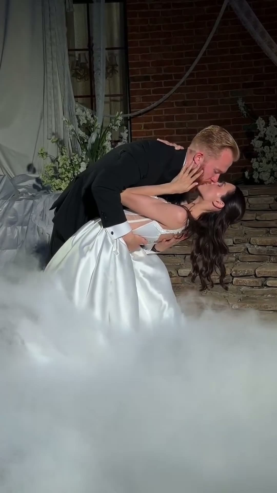
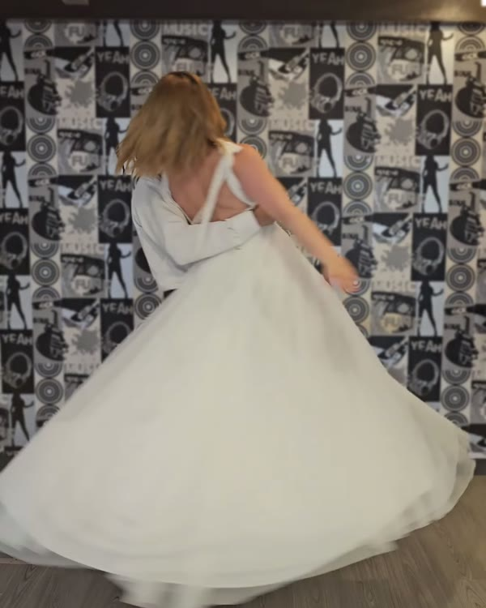
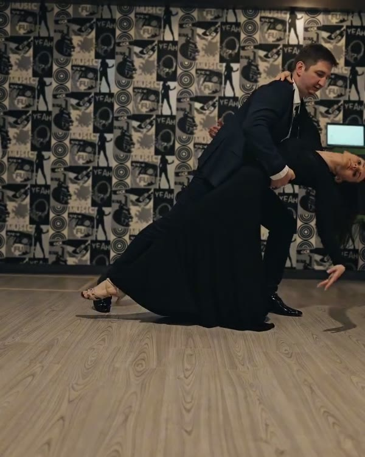
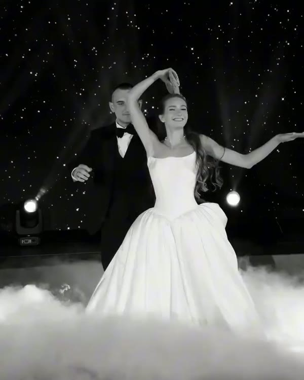
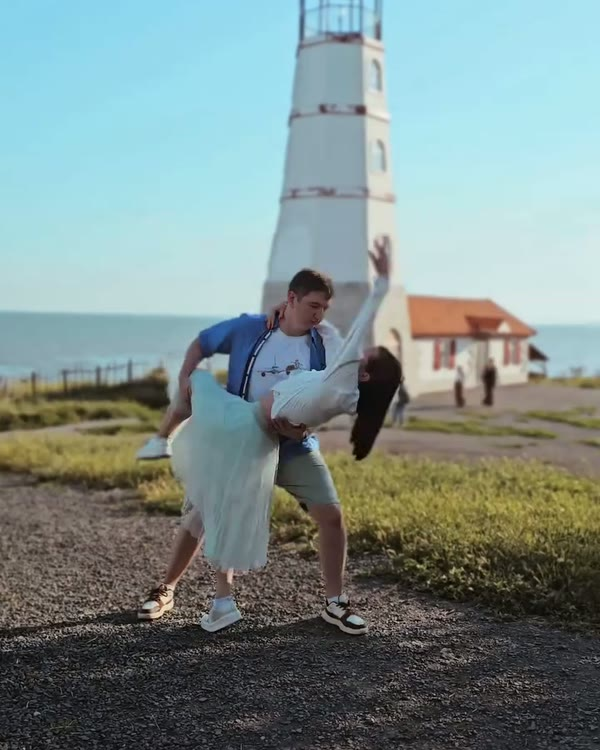
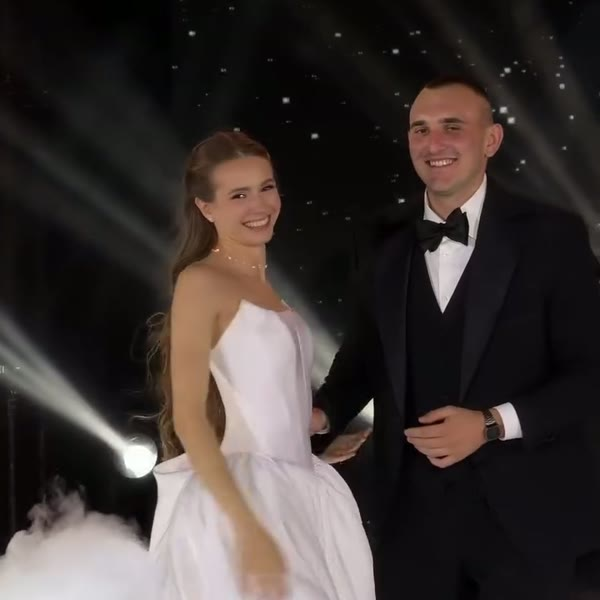
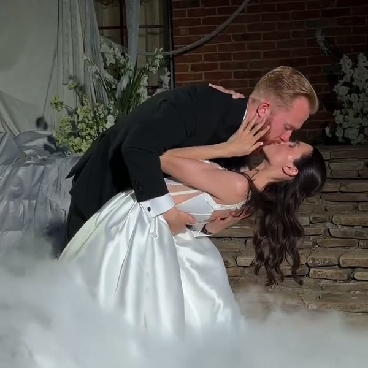
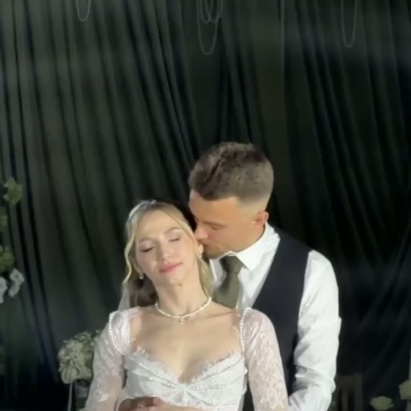

Ваш первый танец дома
Красивые и простые постановки на любимые песни. Разучите дома в своем темпе, даже если никогда не танцевали.
Выбрать танецКак это работает
Выберите песню
16 готовых танцев: вальсы, медленные и современные, на русские и английские песни.
Оформите заказ
Без регистрации. Реквизиты для оплаты и ссылка на урок придут в Telegram или WhatsApp.
Разучите в своем темпе
Урок снят как живое занятие: повторяйте за парой, ставьте на паузу, пересматривайте. Доступ бессрочный.
Чаще всего выбирают

ХитГотовый танецЭхо любви
ХитГотовый танецКак я люблю тебя
ХитГотовый танецЗагадай любовь
ХитГотовый танецМир
Что входит в урок
- Урок как живое занятие. Я разбираю танец с парой, а вы учите вместе с ними, как будто пришли ко мне в зал.
- Подробный разбор движений. Медленно, по связкам, в некоторых танцах — под счет.
- Танец целиком под музыку. Чтобы видеть, как все складывается.
- Альтернативные поддержки отдельным видео. Если не хотите поднимать невесту, есть простой вариант.
- Цена как у одного занятия в студии. А учить можно когда и где удобно.
Кто ставит танцы
Привет, я Настя — хореограф первого танца из Ростова-на-Дону.
Ставлю свадебные танцы в зале и онлайн и обожаю каждую свою пару. Каждый урок снят на настоящем занятии: я учу ребят, а вы учите танец вместе с ними. Многие пары уже выучили танец по видео и станцевали его на свадьбе.
[N]лет ставлю танцы
[N]пар станцевали
Пары, которые уже станцевали
[N] пар уже станцевали свой первый танец по урокам Насти

«Думали, не справимся — разучили за три недели по вечерам».
[Имена], [месяц, год]«Гости не поверили, что мы учились по видео».
[Имена], [месяц, год]
«Как будто занимались у Насти в зале. Муж сначала сопротивлялся, а на свадьбе не хотел уходить с танцпола».
[Имена], [месяц, год]Форматы
Готовый урок
от 2 500 ₽
Подробный разбор, танец под музыку, альтернативные поддержки.
Урок + разбор вашего видео
[цена]
Пришлите видео, как танцуете, и Настя подскажет, что поправить.
Офлайн в Ростове
[цена]
Постановка в зале с Настей.
Вопросы
Мы никогда не танцевали. Получится?
Да. Уроки сделаны для тех, кто танцует впервые: подробный разбор и простые варианты поддержек. Многие пары уже выучили танец по видео.
Сколько времени нужно?
Обычно 3–4 недели по 2 занятия по 30–40 минут.
Как оплатить и получить урок?
Оформите заказ на странице танца. Реквизиты для оплаты придут в Telegram или WhatsApp, после оплаты туда же придет личная ссылка на урок. Доступ бессрочный.
А музыка?
Песню вы покупаете или включаете сами. В уроке есть ссылка на трек и с какой секунды начинать.
Можно вернуть деньги?
Да, пока вы не открыли урок.